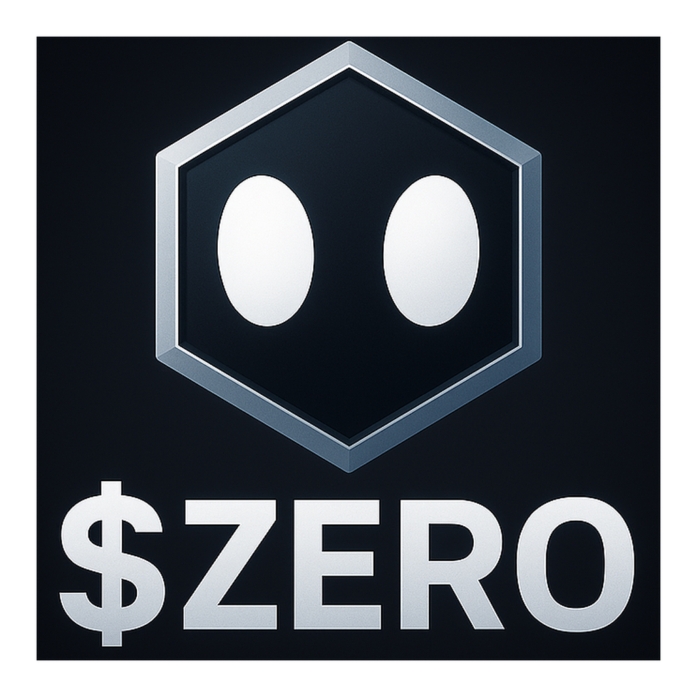

ZERO
About
NFT Mint
Tokenomics
How to Buy
Roadmap
Allies
FAQ
Buy ZERO
Built different. Backed by Lions.
Powered by Cronos.
Community brand + real utility across NFTs, wearables, partner collabs and Cronos native culture.
View Chart
GitBook
Discord
Telegram